WARNING: Since injury such as scalding could be caused by escaping steam or coolant, do not remove the filler cap from the coolant expansion tank while the system is hot.
WARNING: Since injury such as scalding could be caused by escaping steam or coolant, do not remove the filler cap from the coolant expansion tank while the system is hot.
Published: May 15, 2007
| Item | Specification |
|---|---|
| Anti-freeze | WAS-M97B44-D |
| Anti-freeze concentration - Will provide frost protection to -40°C (-40°F) | 50% |
| Specific gravity of coolant at 20°C (68°F), to protect against frost down to -40°C (-40°F) | 1.068 |
| Item | Capacity |
|---|---|
| Cooling System | 10 Liters (17.6 pints) (10.6 quarts) |
| Radiator | 2.3 Liters (4 pints) (2.4 quarts) |
| Coolant Expansion Tank (To Cold Level) | 1.2 Liters (2.1 pints) (1.3 quarts) |
| Item | Description |
|---|---|
| Cooling system type | Pressurized, thermostatically controlled with coolant expansion tank |
| Radiator | Cross flow |
| Coolant expansion tank | Remote with cold level fill mark |
| Pressure cap rating | 100 kPa (1 bar) (15.9 lbf/in²) |
| Thermostat: Starts to open | 82° C (180°F) |
| Thermostat: Fully open | 96° C (205°F) |
| Cooling fan | Viscous |
| Cooling fan control | Bi-metallic |
| Cooling fan diameter | 475 mm (18.70 inches) |
| Cooling fan direction of rotation | Clockwise when viewed from front of engine |
| Coolant pump | Centrifugal flow impeller, belt driven from the crankshaft |
| Description | Nm | lb-ft |
|---|---|---|
| Heater hose air bleed screw | 2 | 1 |
| Coolant pump bolts | 23 | 17 |
| Coolant pump outlet manifold | 10 | 7 |
| Coolant pump hose clip | 3 | 2 |
| Viscous coupling bolts | 10 | 7 |
| Expansion tank bolt | 10 | 7 |
| Charge air cooler to radiator bolts | 20 | 15 |
| Charge air cooler inlet and outlet hose clips | 3 | 2 |
| Charge air cooler bracket bolts | 9 | 7 |
| Power steering reservoir nuts | 4 | 3 |
Published: Jan 30, 2007
WARNING: Since injury such as scalding could be caused by escaping steam or coolant, do not remove the filler cap from the coolant expansion tank while the system is hot.
 CAUTION: The engine cooling system must be maintained with the correct concentration and type of anti-freeze solution to prevent corrosion and frost damage. Failure to follow this instruction may result in damage to the engine.
CAUTION: Engine coolant will damage the paint finished surfaces. If spilt, immediately remove the coolant and clean the area with water.
WARNING: Since injury such as scalding could be caused by escaping steam or coolant, do not remove the filler cap from the coolant expansion tank while the system is hot.
WARNING: Since injury such as scalding could be caused by escaping steam or coolant, do not remove the cooling system bleed screw while the system is hot.
WARNING: Do not work on or under a vehicle supported only by a jack. Always support the vehicle on safety stands.
WARNING: Eye protection must be worn.
CAUTION: The engine cooling system must be maintained with the correct concentration and type of anti-freeze solution to prevent corrosion and frost damage. Failure to follow this instruction may result in damage to the engine.
CAUTION: Engine coolant will damage the paint finished surfaces. If spilt, immediately remove the coolant and clean the area with water.
WARNING: Since injury such as scalding could be caused by escaping steam or coolant, do not remove the filler cap from the coolant expansion tank while the system is hot.
WARNING: Since injury such as scalding could be caused by escaping steam or coolant, do not remove the cooling system bleed screw while the system is hot.
WARNING: Do not work on or under a vehicle supported only by a jack. Always support the vehicle on safety stands.
WARNING: Eye protection must be worn.
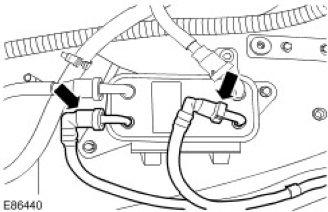
WARNING: Eye protection must be worn.
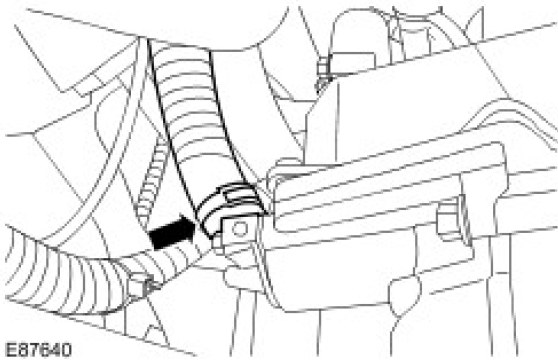
CAUTION: Engine coolant will damage the paint finished surfaces. If spilt, immediately remove the coolant and clean the area with water.
CAUTION: Anti-freeze concentration must be maintained at 50%.
Fill the cooling system expansion tank until the coolant level becomes static with in the 'COLD FILL RANGE' .
CAUTION: Make sure the coolant level remains above the "COLD FILL RANGE" lower level mark.
CAUTION: Observe the engine temperature gauge. If the engine starts to over-heat switch off immediately and allow to cool. Failure to follow this instruction may cause damage to the vehicle.
WARNING: Release the cooling system pressure by slowly turning the coolant expansion tank cap a quarter of a turn. Cover the expansion tank cap with a thick cloth to prevent the possibility of scalding. Failure to follow this instruction may result in personal injury.
Published: Jul 3, 2007
WARNING: To avoid having scalding hot coolant or steam blowing out of the cooling system, use extreme care when removing the coolant pressure cap from a hot cooling system. Wait until the engine has cooled, then wrap a thick cloth around the coolant pressure cap and turn it slowly until the pressure begins to release. Step back while the pressure is released from the system. When certain all the pressure has been released (still with a cloth) turn and remove the coolant pressure cap from the coolant expansion tank. Failure to follow these instructions may result in personal injury.
CAUTION: The engine cooling system must be maintained with the correct concentration and type of anti-freeze solution to prevent corrosion and frost damage. Failure to follow this instruction may result in damage to the vehicle.
CAUTION: Engine coolant will damage paint finished surfaces. If spilled, immediately remove coolant and clean area with water.
WARNING: Since injury such as scalding could be caused by escaping steam or coolant, do not remove the filler cap from the coolant expansion tank while the system is hot.
WARNING: Do not work on or under a vehicle supported only by a jack. Always support the vehicle on safety stands.
WARNING: Eye protection must be worn.
CAUTION: The engine cooling system must be maintained with the correct concentration and type of anti-freeze solution to prevent corrosion and frost damage. Failure to follow this instruction may result in damage to the vehicle.
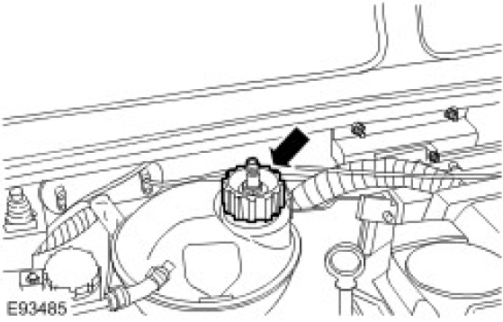
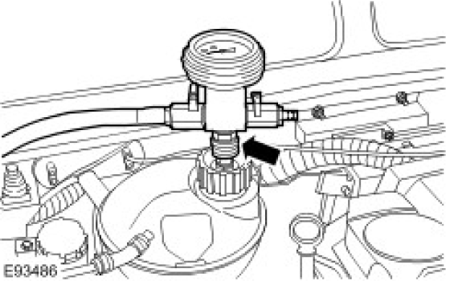
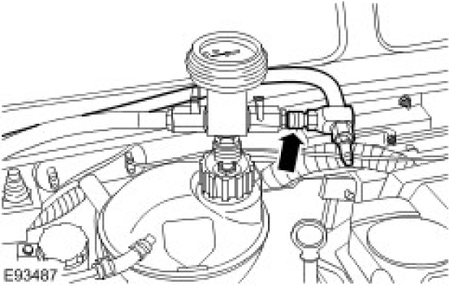
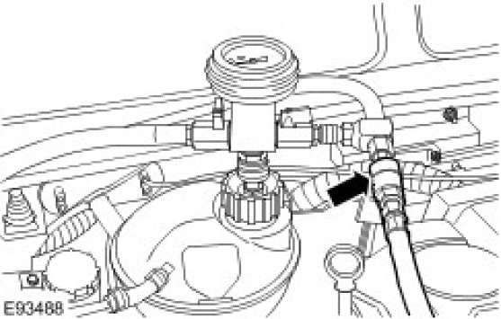
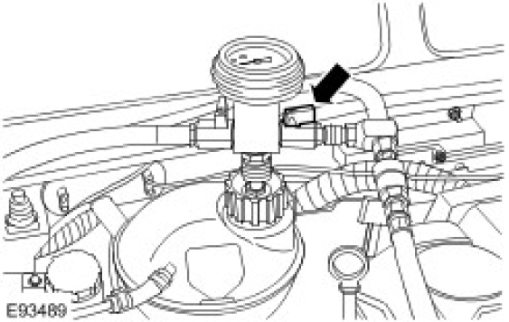
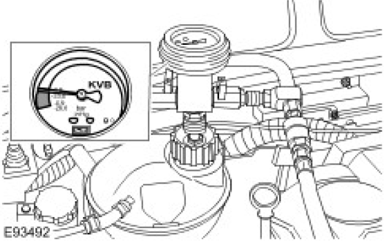
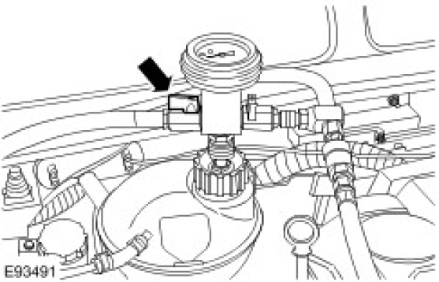
CAUTION: Make sure the coolant level remains above the "COLD FILL RANGE" lower level mark.
CAUTION: Observe the engine temperature gauge. If the engine starts to over-heat switch off immediately and allow to cool. Failure to follow this instruction may cause damage to the vehicle.
WARNING: Since injury such as scalding could be caused by escaping steam or coolant, do not remove the filler cap from the coolant expansion tank while the system is hot.
Published: Jan 8, 2007
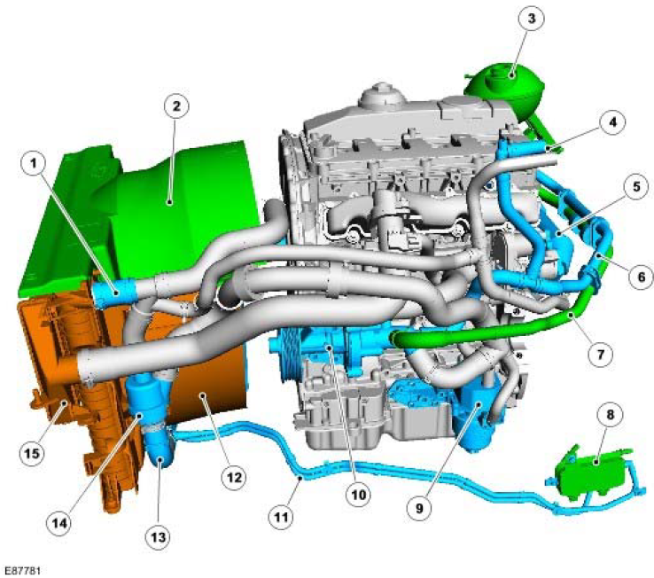
| Item | Part Number | Description |
|---|---|---|
| 1 | Radiator top hose | |
| 2 | Cooling fan top cowl | |
| 3 | Expansion tank | |
| 4 | Passenger compartment heater connections | |
| 5 | Exhaust Gas Recirculation (EGR) cooler | |
| 6 | EGR cooler outlet hose | |
| 7 | Expansion tank hose | |
| 8 | Fuel cooler | |
| 9 | Engine oil cooler | |
| 10 | Coolant pump | |
| 11 | Fuel cooler feed and return hoses | |
| 12 | Cooling fan lower cowl | |
| 13 | Radiator bottom hose | |
| 14 | Thermostat assembly | |
| 15 | Intercooler |
The cooling system employed is the bypass type, which allows coolant to circulate around the engine and the heater circuit while the thermostat is closed. The primary function of the cooling system is to maintain the engine within an optimum temperature range under changing ambient and engine operating conditions. Secondary functions are to provide heating for the passenger compartment and cooling for the Exhaust Gas Recirculation (EGR) system.
The cooling system comprises:
The coolant is circulated by a centrifugal type pump mounted on the front Left Hand (LH) side of the engine and driven by the ancillary drive 'polyvee' belt. The coolant pump circulates coolant around the cylinder block and cylinder head, to the radiator, heater matrix and the EGR cooler, via the coolant hoses.
The thermostat is located in the bottom hose assembly on the inlet side of the cooling circuit and provides a stable control of the coolant temperature in the engine.
The radiator is a cross flow type with an aluminium matrix and moulded plastic end tanks. The radiator end tanks have brackets which allow for the attachment of the fan cowl assembly, intercooler and, if fitted, air conditioning system condenser. The bottom of the radiator is located in rubber bushes supported by brackets on the chassis longitudinals. The top of the radiator is located in rubber bushes secured by brackets fitted to the bonnet locking platform.
An air-to-air intercooler is located in front of the radiator and is used to cool the compressed air from the turbocharger before it enters the inlet side of the engine. For additional information, refer to Intake Air Distribution and Filtering - 2.4L Duratorq-TDCi (Puma) Diesel (303-12).
The radiator top hose is connected to a coolant outlet elbow, which is bolted to the cylinder head. The top hose also has a connection for the feed to the heater matrix. The radiator bottom hose is routed around the front of the engine and is connected to the thermostat assembly. The bottom hose also has a return connection from the fuel cooler. The feed for the fuel cooler comes from a connection just below the bottom hose connection on the Right Hand (RH) side of the radiator assembly.
An expansion tank is fitted to the RH suspension turret in the engine compartment. The expansion tank allows for expansion of the coolant when the engine is hot and replaces the coolant into the system as the engine cools down.
The EGR cooler is located in the coolant return line from the engine and top hose. The fluid cools the exhaust gases returning to the inlet manifold, which improves emissions.
The heater matrix outlet hose incorporates a bleed screw to bleed air when filling the cooling system.
Published: Mar 12, 2007
For information on the operation of the systems:
Engine Cooling
| Mechanical | Electrical |
|---|---|
|
|
Make sure that all DTCs are cleared following rectification.
Make sure that all DTCs are cleared following rectification.
| Symptom | Possible cause | Action |
|---|---|---|
| Coolant loss |
|
Carry out a visual inspection. If there are no obvious leaks, carry out a pressure test using your workshop tester. Rectify as necessary. |
| Overheating |
|
Check the coolant level and condition. Carry out a pressure test using your workshop tester. Rectify as necessary. Check the thermostat and rectify as necessary. Check the viscous fan operation, make sure the viscous fan rotates freely. Check for obstructions to the air flow over the radiator. Rectify as necessary. |
| Engine not reaching normal temperature |
|
Check the thermostat operation. Check the viscous fan operation, make sure the viscous fan is not seized. Rectify as necessary. |
| DTC | Description | Possible causes | Action |
|---|---|---|---|
| P01152F | Engine coolant temperature (ECT) (cylinder head temperature (CHT)) sensor 1 circuit - signal erratic |
|
Check the CHT sensor and circuit. Refer to the electrical guides. Install a new CHT sensor if necessary. Cylinder Head Temperature (CHT) Sensor. Clear the DTCs and test for normal operation. |
| P011516 | Engine coolant temperature (ECT) (cylinder head temperature (CHT)) sensor 1 circuit - circuit voltage below threshold |
|
|
| P011517 | Engine coolant temperature (ECT) (cylinder head temperature (CHT)) sensor 1 circuit - circuit voltage above threshold |
|
|
| P048000 | Fan 1 control circuit on/off |
|
Check the cooling fan and circuits. Refer to the electrical guides. Install a new cooling fan if necessary. Cooling Fan (26.25.19). Clear the DTCs and test for normal operation. |
Published: Jan 15, 2007
WARNING: Release the cooling system pressure by slowly turning the coolant expansion tank cap a quarter of a turn. Cover the expansion tank cap with a thick cloth to prevent the possibility of scalding. Failure to follow this instruction may result in personal injury.
WARNING: Since injury such as scalding could be caused by escaping steam or coolant, do not remove the filler cap from the coolant expansion tank while the system is hot.
CAUTION: Engine coolant will damage the paint finished surfaces. If spilt, immediately remove the coolant and clean the area with water.
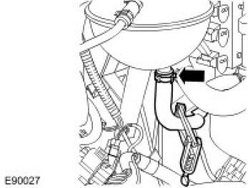
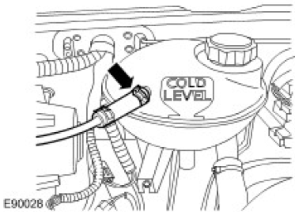
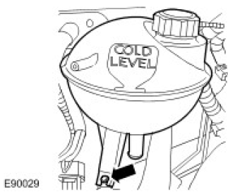
Published: Jan 30, 2007
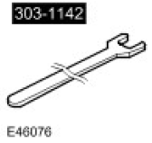
303-1142
Cooling fan spanner
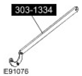
303-1334
Cooling fan retaining tool
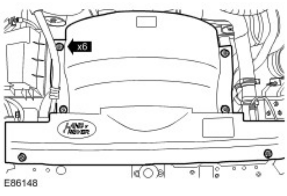
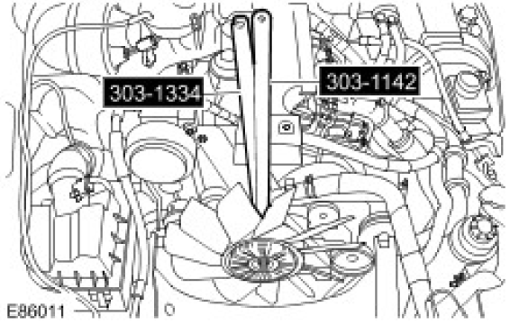
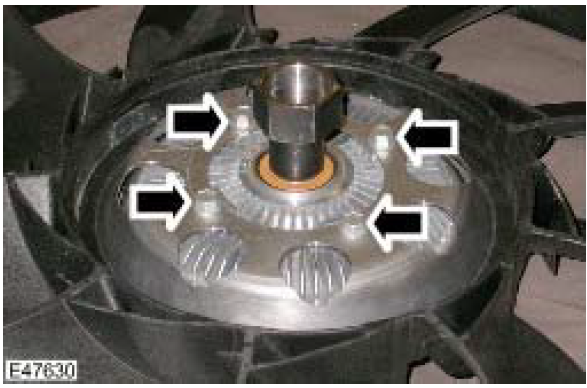
Published: Jan 30, 2007
CAUTION: Make sure that all openings are sealed. Use new blanking caps.
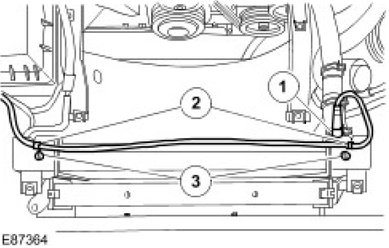
CAUTION: Make sure that all openings are sealed. Use new blanking caps.
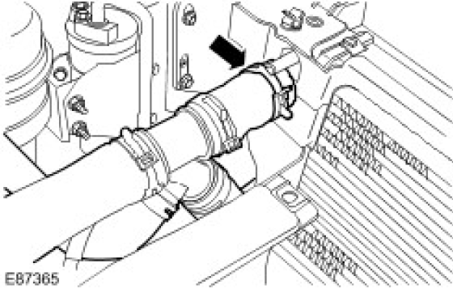
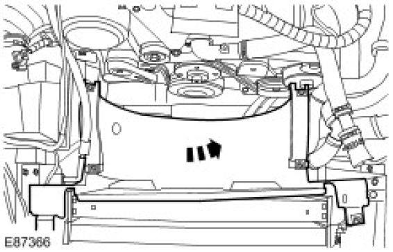
Published: Jan 31, 2007
WARNING: Do not work on or under a vehicle supported only by a jack. Always support the vehicle on safety stands.
CAUTION: Make sure that all openings are sealed. Use new blanking caps.
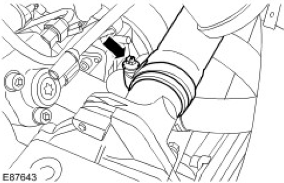
CAUTION: Make sure that all openings are sealed. Use new blanking caps.
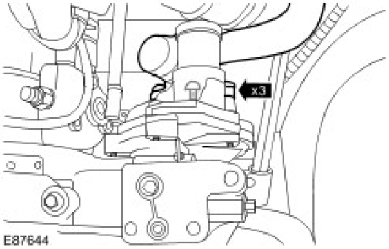
CAUTION: Make sure that all openings are sealed. Use new blanking caps.
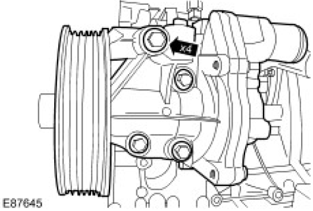
Published: Jan 30, 2007
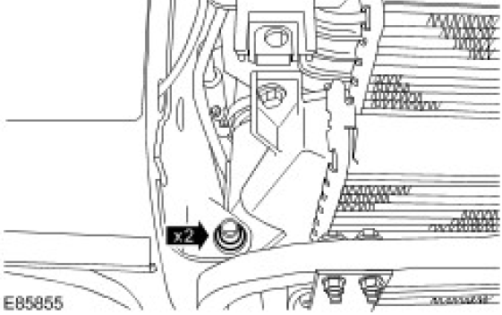
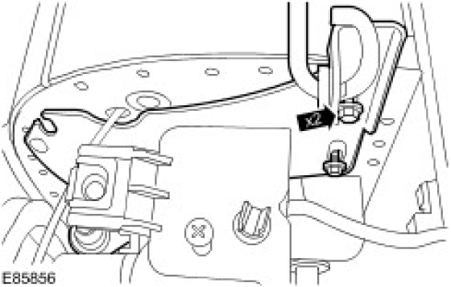
CAUTION: Make sure that all openings are sealed. Use new blanking caps.
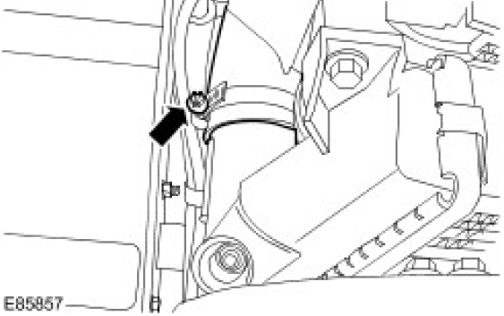
CAUTION: Make sure that all openings are sealed. Use new blanking caps.
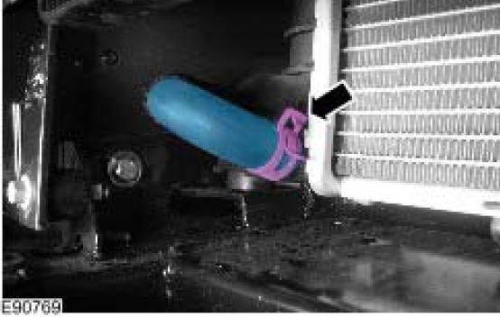
CAUTION: Make sure that all openings are sealed. Use new blanking caps.
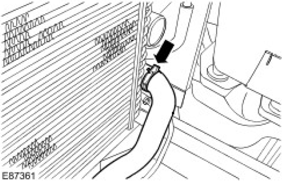
CAUTION: Make sure that the radiator and charge air cooler are not damaged when removed.
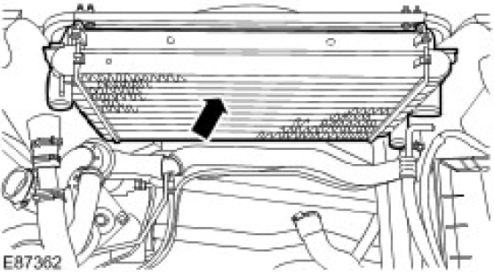
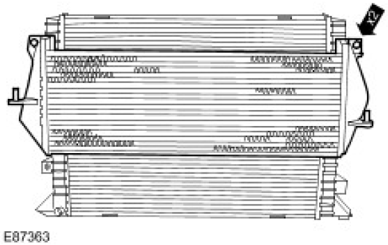
Published: Jan 30, 2007
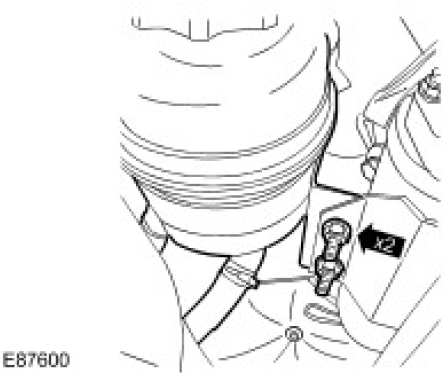
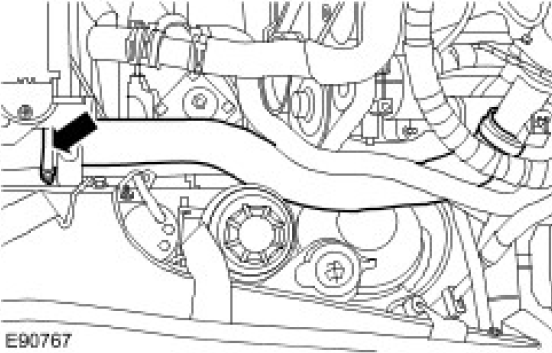
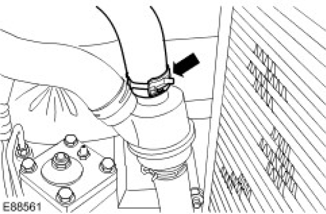
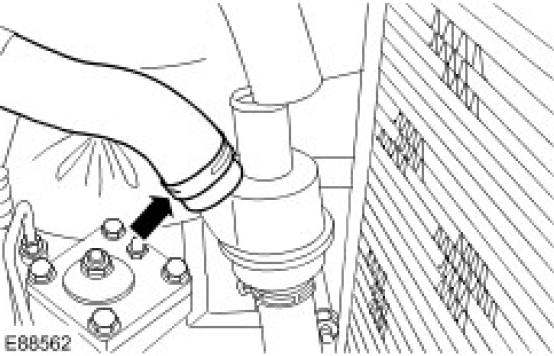
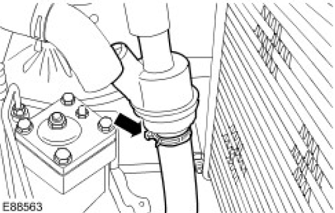